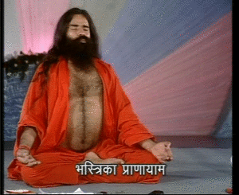
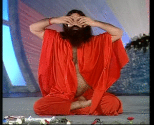

A wave to make india mentally strong and relaxed
Power Mind
Games
Music
Motivation
Yoga
Anulom-Vilom
Kapal-bhati
Sitali Pranayama
Ujjai Pranayama
Bhastrika Pranayama
Aganisar Pranayama
Brahmiri Pranayama
Previous
Various Asanas
Next
Asanas that increase
concentration
Anulom-Vilom
Benifits:
Anulom Vilom Pranayama cleans the pranic channels and makes the prana flow freely in the entire body. The nadis or the pranic energy channels are purified. Hence this pranayama is also called Nadi Shodhana Pranayama.
Anulom Vilom Pranyama balances the two main energy channels – Ida and Pingala. It balances the two hemispheres of the brain, bringing about peace and tranquility.When the Ida and Pingala nadis are balanced, it awakens the central channel called Sushumna Nadi.
It removes toxins from the body.
It can reduce weight in some practitioners depending on their body constitution and is a good practice for obesity.
Caution:
Those suffering from heart ailments should not attempt retention of breath.
Avoid retension of breath if you have high blood pressure.
Kapal Bhati
Benifits:
It increases the flow of oxygen in the body and mainly the lungs.
Kapalabhati Pranayama along with Asthma Mudra and Bronchial Mudra practice, has better benefits and helps to heal asthma and bronchitis related symptoms.
Reduce the stress and anxiety in the body and the mind, bringing more clarity.
Helps to detoxify the entire body of all impurities in a cleansing process, through the fast exhalations.
When practiced along with the basic yoga poses on a daily basis, it keeps the body light and healthy, encouraging good eating habits and other habits.
Improves digestion while cleansing the internal organs.
With the practice of Kapalabhati the lungs are cleansed of carbon dioxide- the toxic end product of metabolism.
This pranayama is good for those suffering from diabetes as it cleanses the body and encourages a good endocrine system. Yoga for diabetes
Caution:
This practice of Kapalabhati pranayama should be avoided by anyone suffering from viral infections.
Not to be practiced by women who are either pregnant or are in their menstrual cycle.
Hypertension patients should practice Kapalabhati Pranayama with a yoga teacher’s guidance and care.
Not to be practiced by anyone suffering from injury of the neck, as there is pressure with the fast exhalation.
Not to be done or practiced by anyone suffering from lower back pain or even slip disc.
Not to be practiced by anyone with a weak digestive system
Sitali Pranayama
Benifits:
Sitali Pranayama cools the body and is best done after the practice of daily yoga poses, bringing balance in the temperature of the body.
Sitali Pranayama helps to reduce the blood pressure in the body when done with guidance from a yoga teacher.
As this breathing cools the body temperature, it controls the parasympathetic and somatic nervous system and hence beneficial for those suffering from anxiety related issues, including trauma.
Helps in heart related diseases and can be practiced along with heart opening series of yoga poses for better results.
As it plays a great role in the endocrine system, it keeps the internal organs like stomach, liver, spleen etc, clean from toxins.
Caution:
Best to avoid if suffering from blood pressure.
Not to be done if suffering from migraine.
Best not to hold the breath within if having problems related to the heart.
Ujjayi Pranayama
Benifits:
This kind of breathing helps to reduce infections or allergies in the lungs, improving the lung capacity with full deep breathing. Clearing the passage of the nostrils and the throat, it reduces the accumulation of phlegm.
Increases the supply of oxygen throughout the entire body, keeping the body active and fresh.
Ujjayi Pranayama is good for Blood Pressure.
The practice of Ujjayi Pranayama brings balance in all the chakras in the body, while activating them. Yoga for the Chakras Strengthens the digestive system.
As Ujjayi Pranayama cools the body working on the Ida(left nostril) side of the body, the practice brings more benefit if done along with the practice of Moon Salutation (Chandra Namaskar).
Caution:
Not to be practiced when suffering from migraine.
Not to be practiced when suffering from heart ailments.
Best to avoid if pregnant as if done wrong can put pressure on the fetus.

Bhastrika Pranayama
Benifits:
Strengthens the respiratory system, while keeping the passage clear of toxins and blockages.
Bhastrika Pranayama helps to improve the blood circulation in the body, helps to purify the blood, by detoxifying.
Keeps the nasal passage clean and clear of dust and allergies.
Bhastrika Pranayama helps to reduce fat, as it is a dynamic way of breathing.
This dynamic way of breathing helps to boost immunity.
Bhastrika Pranayama calms the body along with the mind, reducing the stress and anxiety completely.
Helps to improve awareness with deep focus.
Reducing the gastric fire, helping digestion.
Caution:
Not to be practiced by those suffering from any ailment related to the internal organ- stomach, spleen, intestine, kidney etc.
Not to be practiced by someone suffering from any heart ailment.
Bhastrika Pranayama is not good for those with Hypertension.
Asthmatic patients should take guidance from a yoga teacher while practicing Bhastrika Pranayama.
Avoid if there are ulcers in the body.
Aganisar Pranayama
Benefits
Agnisar Kriya is one of the best asanas to strengthen the abdominal muscles. It focuses on churning out the practitioner’s belly which can improve the abdominal muscles and get rid of digestive disorders. It is excellent pranayama for the abdomen.
Agnisar Kriya can help in curing lung disorders since it involves strong forceful rhythms of inhalation and exhalation. Such strong breathing technique empties lungs of phlegm and coughs thus ensuring smooth breathing.
The kriya helps to regulate fire element of the body which in turn helps to keep the energy levels high all day. It also maintains the warmth of the body and removes sleepiness.
The kriya plays a very important role when it comes to rejuvenating the organs which can also hinder the aging process. It can also help to retain youth for a long time.
Agnisar kriya helps to increase the blood flow within the body.
Agnisar basically serves an inner activity in which the digestive and abdominal muscles get churned out. This process helps to massage the internal organs, especially the belly.
This practice can stimulate the pancreas and liver thus curing obesity problems and diabetes.
It can also cure problems like tuberculosis and asthma.
Caution
Patients of a hernia, diarrhea, intestinal problems, and high blood pressure should never practice the Agnisar Kriya.
If you have recently undergone stomach operation, then you must not perform this kriya. Make sure that you start practicing it after at least a few months only under the professional guidance of a yoga master.
In case you experience feelings of physical distress and tiredness while practicing it, stop performing it immediately.
Patients having the ear, eye and nose problems must not practice this kriya.
Practicing Agnisar Kriya can help to cure diabetes naturally of your body and help in strengthening your inner organs. Practice this kriya only under the strict guidance of a professional yoga teacher.

Brahmiri Pranayama
Benefits
When Bhramari Pranayama is done along with the practice of daily yoga poses, it helps to keep the energy in control, balancing it. The body needs to cool down after it is warmed up with the practice of yoga poses, and here Bhramari Pranayama ensures that.
Ending the day with the practice of some yoga along with Bhramari Pranayama before going to bed, encourages a sound and deep sleep relaxing the parasympathetic nervous system, helping in reducing the symptoms related to insomnia.
Bhramari Pranayama is said to release tensions and stress in the body, while playing a great role in controlling anxiety related symptoms.
Helps to reduce the symptoms related to women’s reproductive system, controlling the hormones .
As it calms the mind soothing the nerves, it encourages concentration and memory.
Caution
Best to avoid if suffering from migraine, or can be done with the eyes open and with the guidance of a yoga teacher.
If suffering from any heart ailment, best to practice Bhramari Pranayama for shorter duration. The sound of Hmmmm….the buzzing sound can be reduced.
This practice should be done in empty stomach.
The sound should be slow and in control, avoiding pressure at the lungs and the chest.
Was the Information Useful?
Yes
No
Play now!
×
Browse..